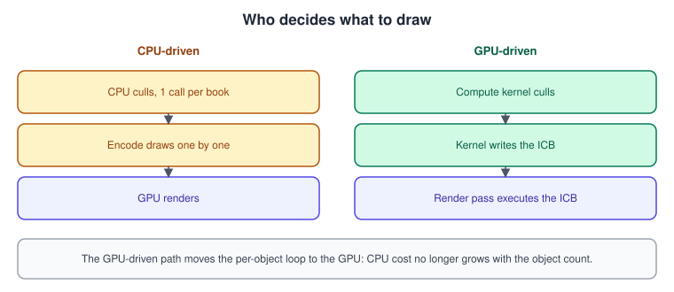
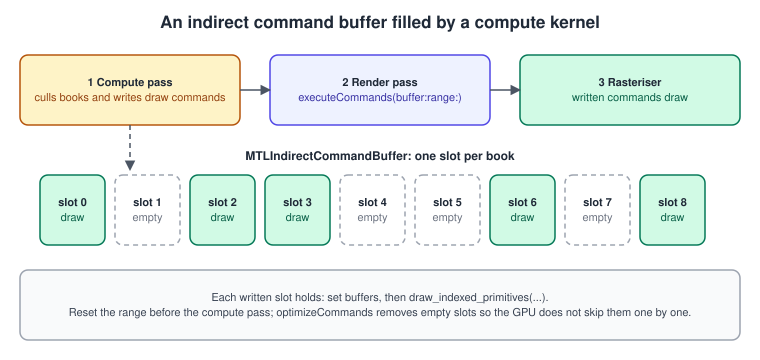
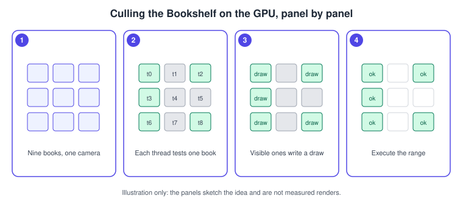

GPU-Driven Rendering and Indirect Command Buffers
|
This content was generated with the assistance of AI and should be verified against the official documentation before being relied on in production. |
In a conventional renderer the CPU walks the scene, decides what is visible and encodes one draw call per visible object. That loop costs CPU time proportional to the number of objects, and it must wait for any GPU result (a culling pass, a visibility test) before it can continue. GPU-driven rendering moves the decision to the GPU: a compute kernel tests each object and writes the draw commands itself, and the render pass executes them. In Metal the container for those commands is the indirect command buffer (ICB).
The facts were checked in November 2026. The versions documented are Metal 4 (the MTL4* types, available from iOS, iPadOS, macOS,
tvOS and visionOS 26.0) next to the older MTL* types, and Metal Shading Language 4.0 and 4.1 (MTLLanguageVersion.version4_0 from the
26 OSes, version4_1 from the 27 OSes). Indirect command buffers themselves date from iOS 12 and macOS 10.14. Metal 4 needs an A14 or later, an Apple-silicon Mac or an Apple Vision Pro. The code
is Swift 6 with Xcode 27 on an Apple-silicon Mac; test GPU-encoded ICBs on a device or a Mac.
In the running example, Metal Bookshelf (a multiplatform SwiftUI app hosting an MTKView, with a Metal 4 path and a Metal 3
fallback, plus a visionOS target), this page follows
Argument Buffers and Bindless Resources: the shelf holds many books
with a material table, and now a compute kernel keeps only the books inside the camera frustum and issues their draws. The compute
basics are in Compute Kernels; the instancing and indirect drawing it builds on are
compared in OpenGL instancing and indirect drawing, and the mesh-shader alternative
is in Mesh Shaders. The general theory of culling is in
The Rendering Pipeline.
Why GPU-driven

Apple’s documentation describes the benefit this way: without ICBs you cannot submit rendering commands on the GPU, so the CPU waits for the result of a culling kernel, then generates the render commands, and the GPU in turn waits for those commands to travel back across the CPU to GPU bridge. With an ICB the whole sequence stays on the GPU. Three cases show the value:
-
Culling. Thousands of objects, only a few visible. The kernel removes the rest before any draw is issued.
-
Level of detail and variants. The kernel picks a mesh, a material or a pipeline per object from distance or other data.
-
Reuse. A scene that does not change can be encoded once into an ICB (even on the CPU) and replayed every frame at almost no encoding cost.
It is not always faster. A scene with a few dozen objects is cheaper to cull and encode on the CPU, and a GPU-driven design adds a compute pass, a barrier and complexity. The break-even point depends on the device; measure (see Debugging and Profiling).
The pipeline of one frame
Each step is explained below. The order matters: the compute pass must be finished and visible before the render pass starts reading the commands.

Creating an indirect command buffer
An ICB is created from a descriptor that declares which kinds of commands it can hold and how many resources they may bind. These choices are fixed at creation, so declare only what you need: a smaller ICB is cheaper to store and to execute.
MTLIndirectCommandBufferDescriptor property |
Meaning |
|---|---|
|
An option set of |
|
If |
|
If |
|
The same for the fixed-function state. A non-inherited state must be set by each command, which makes the command larger. |
|
How many buffer slots a command may set in each stage. |
|
How many threadgroup-memory lengths a command may set. |
|
Optional capabilities; enable only when used. |
The render pipeline that the commands use must be created with supportIndirectCommandBuffers = true
(MTLRenderPipelineDescriptor and MTLMeshRenderPipelineDescriptor both have the property).
import Metal
func makeBookICB(device: MTLDevice, maxBooks: Int) -> MTLIndirectCommandBuffer {
let d = MTLIndirectCommandBufferDescriptor()
d.commandTypes = [.drawIndexed]
d.inheritPipelineState = true // the executing encoder sets the pipeline once
d.inheritBuffers = false // each command binds its own buffers
d.maxVertexBufferBindCount = 4
d.maxFragmentBufferBindCount = 4
let icb = device.makeIndirectCommandBuffer(descriptor: d,
maxCommandCount: maxBooks,
options: .storageModePrivate)!
icb.label = "Book ICB"
return icb
}
func makeBookPipeline(device: MTLDevice, library: MTLLibrary, colorFormat: MTLPixelFormat) throws -> MTLRenderPipelineState {
let p = MTLRenderPipelineDescriptor()
p.label = "Books (ICB)"
p.vertexFunction = library.makeFunction(name: "bookVertex")
p.fragmentFunction = library.makeFunction(name: "bookFragment")
p.colorAttachments[0].pixelFormat = colorFormat
p.depthAttachmentPixelFormat = .depth32Float
p.supportIndirectCommandBuffers = true // required for use with an ICB
return try device.makeRenderPipelineState(descriptor: p)
}MTLIndirectCommandBuffer.size reports the maximum number of commands. The object also has gpuResourceID, which is what lets you
store it inside an argument buffer for a compute kernel to find.
Encoding on the CPU: record once, replay
The simplest use needs no compute pass. Commands are encoded on the CPU through indirectRenderCommandAt(_:), which returns an
MTLIndirectRenderCommand:
func recordStaticShelf(icb: MTLIndirectCommandBuffer,
vertexBuffer: MTLBuffer, instanceBuffer: MTLBuffer,
materialBuffer: MTLBuffer, uniformBuffer: MTLBuffer,
indexBuffer: MTLBuffer, indexCount: Int, bookCount: Int) {
for i in 0..<bookCount {
let cmd = icb.indirectRenderCommandAt(i)
cmd.setVertexBuffer(vertexBuffer, offset: 0, at: 0)
cmd.setVertexBuffer(instanceBuffer, offset: 0, at: 1)
cmd.setFragmentBuffer(materialBuffer, offset: 0, at: 2)
cmd.setVertexBuffer(uniformBuffer, offset: 0, at: 3)
cmd.drawIndexedPrimitives(.triangle,
indexCount: indexCount,
indexType: .uint16,
indexBuffer: indexBuffer,
indexBufferOffset: 0,
instanceCount: 1,
baseVertex: 0,
baseInstance: i)
}
}Source: MTLIndirectRenderCommand
Executing it is one call on the render encoder, which on the Metal 4 path is executeCommands(buffer:range:) of
MTL4RenderCommandEncoder (the classic MTLRenderCommandEncoder has the same call under the older Objective-C name
executeCommandsInBuffer:withRange:). Because inheritPipelineState is true, the pipeline is set on the encoder first.
Encoding on the GPU: culling the Bookshelf
Encoding from a compute kernel needs the ICB inside a buffer. Store its gpuResourceID in a small container structure and bind that
structure to the kernel. The shared header gets one more type:
// Added to ShaderTypes.h
#ifdef __METAL_VERSION__
#define COMMAND_BUFFER(name) command_buffer name
#else
#define COMMAND_BUFFER(name) MTLResourceID name
#endif
struct ICBContainer {
COMMAND_BUFFER(commandBuffer);
};
// Frustum as six planes (xyz = normal pointing inside, w = distance), plus per-book bounds.
struct CullParams {
vector_float4 planes[6];
uint32_t bookCount;
uint32_t indexCount;
};
struct BookBounds {
vector_float3 center; // world space
float radius;
};The kernel runs one thread per book. A visible book encodes a draw; an invisible one encodes nothing:
#include <metal_stdlib>
#include "ShaderTypes.h"
using namespace metal;
// Vertex is the position-and-uv structure declared on the argument-buffers page.
static bool insideFrustum(constant CullParams &cp, float3 c, float r)
{
for (uint i = 0; i < 6; ++i) {
// Signed distance of the sphere centre to the plane; outside by more than r means culled.
if (dot(cp.planes[i].xyz, c) + cp.planes[i].w < -r) { return false; }
}
return true;
}
kernel void cullBooks(uint gid [[thread_position_in_grid]],
constant CullParams &cp [[buffer(0)]],
device const BookBounds *bounds [[buffer(1)]],
device const Vertex *vertices [[buffer(2)]],
device const BookInstance *books [[buffer(3)]],
device const BookMaterial *materials [[buffer(4)]],
constant float4x4 &viewProjection [[buffer(5)]],
device const ushort *indices [[buffer(6)]],
device ICBContainer *icb [[buffer(7)]])
{
if (gid >= cp.bookCount) { return; }
if (!insideFrustum(cp, bounds[gid].center, bounds[gid].radius)) { return; } // leave the slot empty
render_command cmd(icb->commandBuffer, gid);
cmd.set_vertex_buffer(vertices, 0);
cmd.set_vertex_buffer(books, 1);
cmd.set_fragment_buffer(materials, 2);
cmd.set_vertex_buffer(&viewProjection, 3);
cmd.draw_indexed_primitives(primitive_type::triangle,
cp.indexCount,
indices,
1, // instance count
0, // base vertex
gid); // base instance: the vertex function reads books[instance_id]
}Points about the kernel:
-
render_commandwraps one slot of the ICB:render_command cmd(icb->commandBuffer, slot). Theset_*_buffercalls bind buffers to indices below the descriptor’smax...BufferBindCount;draw_indexed_primitivesanddraw_primitivesencode the draw. -
The slot index equals the book index, so the draw order is stable and no atomic counter is needed. The vertex function reads
books[instance_id], which works because the base instance is included in the instance identifier. -
A slot the kernel does not write must be empty: the host resets the range before the pass.
-
Bounds are stored separately from the instance data and use a sphere test, which is conservative (a few invisible books can pass) but cheap. Hierarchical or occlusion tests replace it in larger scenes.
-
Buffers a kernel passes to a command count against the kernel’s own buffer limit; Apple’s sample packs all meshes into one buffer with an offset table for this reason.
Frustum planes on the CPU
import simd
/// Extracts the six frustum planes from a view-projection matrix (Gribb/Hartmann method)
/// for a clip space with z in 0...1, as used by Metal.
func frustumPlanes(_ m: simd_float4x4) -> [SIMD4<Float>] {
let r0 = SIMD4<Float>(m.columns.0.x, m.columns.1.x, m.columns.2.x, m.columns.3.x)
let r1 = SIMD4<Float>(m.columns.0.y, m.columns.1.y, m.columns.2.y, m.columns.3.y)
let r2 = SIMD4<Float>(m.columns.0.z, m.columns.1.z, m.columns.2.z, m.columns.3.z)
let r3 = SIMD4<Float>(m.columns.0.w, m.columns.1.w, m.columns.2.w, m.columns.3.w)
var planes = [r3 + r0, r3 - r0, r3 + r1, r3 - r1, r2, r3 - r2] // left, right, bottom, top, near, far
for i in 0..<planes.count {
let n = simd_length(SIMD3<Float>(planes[i].x, planes[i].y, planes[i].z))
planes[i] /= n // normalise so w is a distance
}
return planes
}Metal’s clip space has z between 0 and 1, so the near plane is r2 and not r3 + r2 as in OpenGL; see
Math for 3D.

Running the frame with Metal 4
func encodeFrame(commandBuffer: MTL4CommandBuffer,
renderPass: MTL4RenderPassDescriptor,
cullPipeline: MTLComputePipelineState,
bookPipeline: MTLRenderPipelineState,
cullTable: MTL4ArgumentTable,
drawTable: MTL4ArgumentTable,
icb: MTLIndirectCommandBuffer,
bookCount: Int) {
let range = 0..<bookCount
// 1. Reset, cull and encode, optimise. All in one compute encoder.
if let c = commandBuffer.makeComputeCommandEncoder() {
c.label = "Cull books"
c.resetCommands(buffer: icb, range: range)
c.barrier(afterEncoderStages: [.dispatch, .blit], beforeEncoderStages: [.dispatch, .blit], visibilityOptions: .device)
c.setComputePipelineState(cullPipeline)
c.setArgumentTable(cullTable)
let w = cullPipeline.threadExecutionWidth
c.dispatchThreads(threadsPerGrid: MTLSize(width: bookCount, height: 1, depth: 1),
threadsPerThreadgroup: MTLSize(width: w, height: 1, depth: 1))
c.barrier(afterEncoderStages: [.dispatch, .blit], beforeEncoderStages: [.dispatch, .blit], visibilityOptions: .device)
c.optimizeCommands(buffer: icb, range: range)
c.endEncoding()
}
// 2. Draw. The barrier is the first command of the render pass: wait for the compute work.
if let r = commandBuffer.makeRenderCommandEncoder(descriptor: renderPass, options: []) {
r.label = "Draw visible books"
r.barrier(afterQueueStages: [.dispatch, .blit], beforeStages: .vertex, visibilityOptions: .device)
r.setRenderPipelineState(bookPipeline)
r.setArgumentTable(drawTable, stages: [.vertex, .fragment])
r.executeCommands(buffer: icb, range: range)
r.endEncoding()
}
}Source: MTL4ComputeCommandEncoder
How this works:
-
resetCommands(buffer:range:),optimizeCommands(buffer:range:)andcopyCommands(sourceBuffer:sourceRange:destinationBuffer:destinationIndex:)are encoded on the compute encoder (they were blit-encoder calls before Metal 4). Reset empties the slots, so commands from the previous frame do not run again. -
optimizeCommandsremoves empty commands and redundant state. Apple’s sample does this because the kernel sets a buffer for every draw and leaves a slot empty for every invisible object. After optimising, execute a range that starts at the beginning; a range that begins in the optimised region is not allowed. -
The Metal 4 barriers are explicit. Within an encoder,
barrier(afterEncoderStages:beforeEncoderStages:visibilityOptions:)orders stages; between encoders of the queue,barrier(afterQueueStages:beforeStages:visibilityOptions:)makes the later work wait. The stage values come fromMTLStages(.dispatch,.blit,.vertex,.fragment,.object,.mesh, …) and the visibility option fromMTL4VisibilityOptions(.deviceor.resourceAlias). The full rules are in Synchronization and Barriers. -
Everything the commands reference (the vertex, instance, material buffers, textures reachable from the material table, the ICB itself) must be resident: put them in a residency set attached to the queue, as in Argument Buffers and Bindless Resources.
-
The
cullTablebinds the kernel’s inputs (the parameter buffers and the container holding the ICB); thedrawTablecarries the uniforms for the draw. BecauseinheritBuffersis false, the commands carry their own buffers, so the draw table matters only for state the commands do not set.
On the Metal 3 path the same flow uses MTLComputeCommandEncoder and the blit encoder (resetCommandsInBuffer:withRange: and
optimizeIndirectCommandBuffer:withRange: on MTLBlitCommandEncoder), useResource(icb, usage: .write) on the compute encoder, and
executeCommandsInBuffer on the render encoder.
Executing only part of the buffer
To execute exactly the commands written, without leaving empty slots for the GPU to skip, run the kernel so it fills the first n
slots (using an atomic counter for the slot) and then execute with a range supplied by the GPU: executeCommands(buffer:indirectBuffer:)
reads an MTLIndirectCommandBufferExecutionRange (location and length, both UInt32) from a buffer address. This removes the
need for optimizeCommands, at the price of a compaction step and an unordered draw order.
Indirect draw arguments
When all you need is a variable count, an ICB is more than necessary. The encoder has direct indirect-draw calls whose arguments
(counts, offsets) come from a buffer a kernel wrote. On the Metal 4 encoder they take a GPU address, for example
drawIndexedPrimitives(primitiveType:indexType:indexBuffer:indexBufferLength:indirectBuffer:), and the buffer holds the
MTLDrawIndexedPrimitivesIndirectArguments layout (indexCount, instanceCount, indexStart, baseVertex, baseInstance).
Use this for one mesh with a GPU-chosen instance count; use an ICB when different draws bind different buffers or pipelines.
// A kernel that writes the argument block for one instanced draw of all visible books.
struct DrawArgs { // matches MTLDrawIndexedPrimitivesIndirectArguments
uint indexCount;
uint instanceCount;
uint indexStart;
int baseVertex;
uint baseInstance;
};
kernel void finishArgs(device DrawArgs *args [[buffer(0)]],
device const atomic_uint *visibleCount [[buffer(1)]],
constant uint &indexCount [[buffer(2)]])
{
args->indexCount = indexCount;
args->instanceCount = atomic_load_explicit(visibleCount, memory_order_relaxed);
args->indexStart = 0;
args->baseVertex = 0;
args->baseInstance = 0;
}Visibility results and occlusion culling
Frustum culling removes what is outside the camera; occlusion culling removes what is hidden behind other objects. Metal gives a
hardware counter for it. Set a visibilityResultBuffer on the render pass (MTL4RenderPassDescriptor and MTLRenderPassDescriptor both
have it, with visibilityResultType), then before each draw choose where the 64-bit counter goes with the encoder’s visibility
mode. Apple’s sample renders cheap proxy geometry (icosahedrons for spheres) in one frame, and in the next frame skips any object whose
fragment count was zero. A ring of one more buffer than the number of frames in flight avoids a race between the CPU reading and the GPU
writing. The GPU-driven version feeds the result buffer to the culling kernel instead of reading it on the CPU, so no readback is needed.
Mesh draws in ICBs
An ICB with commandTypes including .drawMeshThreadgroups or .drawMeshThreads can hold mesh-shader draws, and
MTLIndirectRenderCommand has drawMeshThreadgroups(_:threadsPerObjectThreadgroup:threadsPerMeshThreadgroup:),
setObjectBuffer(_:offset:at:) and setMeshBuffer(_:offset:at:). That combination (GPU culling of whole meshes, then mesh shaders
culling meshlets) is the pattern on Mesh Shaders.
Common mistakes
-
Pipeline not marked for ICBs. Without
supportIndirectCommandBuffers = trueon the render pipeline descriptor, creating or using the pipeline with an ICB fails. -
Stale commands. Forgetting
resetCommandsleaves last frame’s draws in slots that this frame did not write. -
No dependency between passes. On Metal 4, the render pass reading the ICB must wait for the compute pass; omit the barrier and you see flicker or missing books.
-
Executing an optimised range from the middle. Start at zero.
-
Resources not resident. Every buffer and texture the commands reach needs residency on Metal 4 and
useResourceor a residency set on Metal 3. -
Too many bound buffers. A command may bind only as many buffers as the descriptor allowed; raising the limits makes commands larger.
-
Divergent command types. Commands not listed in
commandTypescannot be encoded. -
Reading results on the CPU. Reading a culling count back to size the next frame defeats the purpose; keep it in GPU buffers.
Performance notes
-
GPU-driven rendering pays when object count is high and visibility is low. Measure the compute pass and the render pass separately in a GPU capture.
-
Inherit state wherever it is uniform: pipeline, depth state and cull mode. Smaller commands execute faster.
-
Pack meshes into one large buffer with an offset table; kernels have a limited number of bindable buffers.
-
Keep culling data (bounds) in a dense array separate from the instance data, so the kernel reads little memory.
-
Use
optimizeCommandswhen many slots are empty; skip it when almost every slot is written. -
Combine with argument buffers, so that a command binds a handful of buffers and reaches textures through the material table.
What changed recently
| Version | Change |
|---|---|
iOS 12, macOS 10.14 (2018) |
Indirect command buffers: encode on the CPU or GPU, execute in a render pass. |
iOS 16, macOS 13 (2022) |
Mesh shaders, and |
26 OSes (2025) |
Metal 4: ICB reset, copy and optimise are encoded on |
Where the books are outdated
Metal by Tutorials (4th edition, written for Metal 3) teaches indirect command buffers and GPU-driven rendering in its
chapter 26 and 2D drawing and instancing in chapter 31; it predates the Metal 4 encoders and barriers, so the reset, optimise and
barrier steps above replace its blit-encoder calls and implicit hazard tracking when you adopt MTL4CommandBuffer. It also fills
argument buffers with MTLArgumentEncoder, while a kernel can now use gpuResourceID directly. Metal Programming Guide (2017, Metal 2,
Swift 4) covers 2D drawing, scene graphs and instancing in chapters 8 and 10; its code uses
device.newDefaultLibrary(), which is makeDefaultLibrary() today.
References
-
Indirect command encoding: https://developer.apple.com/documentation/metal/indirect-command-encoding
-
Encoding indirect command buffers on the GPU: https://developer.apple.com/documentation/metal/encoding-indirect-command-buffers-on-the-gpu
-
Specifying drawing and dispatch arguments indirectly: https://developer.apple.com/documentation/metal/specifying-drawing-and-dispatch-arguments-indirectly
-
Culling occluded geometry using the visibility result buffer: https://developer.apple.com/documentation/metal/culling-occluded-geometry-using-the-visibility-result-buffer
-
MTLIndirectCommandBuffer: https://developer.apple.com/documentation/metal/mtlindirectcommandbuffer
-
MTLIndirectCommandBufferDescriptor: https://developer.apple.com/documentation/metal/mtlindirectcommandbufferdescriptor
-
MTLIndirectRenderCommand: https://developer.apple.com/documentation/metal/mtlindirectrendercommand
-
MTLIndirectCommandBufferExecutionRange: https://developer.apple.com/documentation/metal/mtlindirectcommandbufferexecutionrange
-
MTL4RenderCommandEncoder: https://developer.apple.com/documentation/metal/mtl4rendercommandencoder
-
MTL4ComputeCommandEncoder: https://developer.apple.com/documentation/metal/mtl4computecommandencoder
-
MTL4CommandEncoder: https://developer.apple.com/documentation/metal/mtl4commandencoder
-
MTLStages: https://developer.apple.com/documentation/metal/mtlstages
-
Understanding the Metal 4 core API: https://developer.apple.com/documentation/metal/understanding-the-metal-4-core-api
-
Metal Shading Language specification: https://developer.apple.com/metal/Metal-Shading-Language-Specification.pdf
-
Metal Feature Set Tables: https://developer.apple.com/metal/Metal-Feature-Set-Tables.pdf
-
Metal by Tutorials (Kodeco): https://www.kodeco.com/books/metal-by-tutorials
-
Metal Programming Guide (InformIT): https://www.informit.com/store/metal-programming-guide-tutorial-and-reference-via-9780134668949